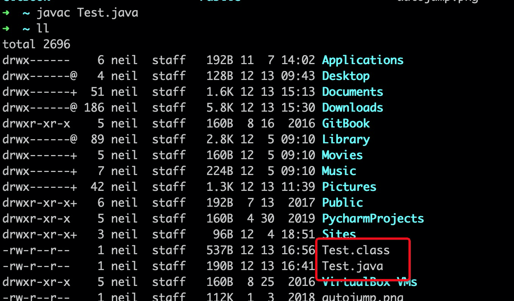
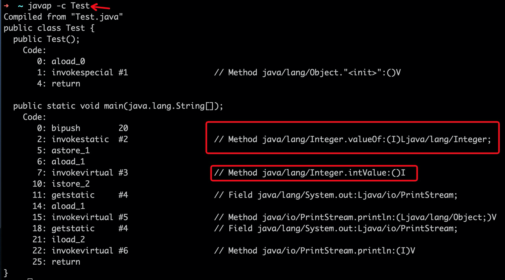

学过Python的都知道，Python也是一个面向对象的语言，Python也号称一切皆对象，因为其类、函数都可以看做成对象，其也没有像Java中原始数据类型的概念。所以，从这个角度看，Python的对象化比Java更彻底。
那我们说说Java的原始数据类型。
原始数据类型
Java原始数据类型有8种，分别如下：
整数
- byte - 8位 - 1字节
- short - 16位 - 2字节
- int - 32位 - 4字节
- long - 64位 - 8字节
浮点
- float - 32位 - 4字节
- double - 64位 - 8字节
字符
- char - 16位 - 2字节
布尔
- boolean - true/false - N
为了更深入的去了解原始数据类型和其包装类，我们今天就单独针对int来详细剖析下。
int 和 Integer
int是java的原始数据类型，Integer是其封装类。
1 | public final class Integer extends Number implements Comparable<Integer> { |
通过源码可以看到Integer里面有个int类型的value来负责存储数据，其也提供了像toString,parseInt以及数据运算的功能。
value是final，这是不可变的写法，后面我们会专门讲final。
1 |
|
在Java1.5时添加d valueOf() ，也同时增加了一个IntegerCache的概念。
Integer可以看成一个类型，想要创建这个类型的实例(Java1.5之前)，我们可以通过
1 | Integer age = new Integer(20); |
这样的方式来创建，但是从1.5之后，我们就可以使用：
1 | Integer age = Integer.valueOf(20); |
仔细看源码就能发现这个IntegerCache, 它能缓存-128到127的数值。所以，用valueOf来获取Integer对象明显是比直接new 高效也省内存的。
自动装箱和自动拆箱
- 什么是自动装箱和自动拆箱？
- 它们如何实现的呢？
顾名思义，装，就是把原始数据类型转换成其包装类的实例；拆，则反过来；
1 | Integer age = 20; // 装箱 |
那自动装箱和拆箱是如何实现的呢？我们可以通过javac和javap命令来看下其装箱和拆箱的过程；
javac 是讲我们的源java文件编译成字节码，而javap则是把我们不可读的字节码反编译成我们可以读的文件。
直接上结果了：
1 |
|
这是我们测试自动装箱和拆箱的Java源文件，通过
1 | $ javac Test.java |
之后，会生成一个.class文件

.class文件是字节码，我们是无法阅读的，借助：
1 | $ javap -c Test |
得到

很清晰的可以看出在自动装箱和拆箱分别通过valueOf()和intValue()来实现。
通过上面的的详细分析，你会感觉java的自动装箱和拆箱很酷，但是，我们应该在实际的业务中避免无意的装箱和拆箱行为，因为相对于大量的对象和数据，其性能有很显著的差异。所以，在实际工作中能用原始类型替换封装类和动态数组的进行替的坚决不用封装类；
源码扩展
1 |
|
对于IntegerCache你应该还记得，其是缓存数组的实现，但是你好像只能缓存-128~127的数值啊，但是其doc说明了，它还可以缓存超出此范围的数值呢。
1 | * This method will always cache values in the range -128 to 127, |
这是怎么回事呢？
1 | private static class IntegerCache { |
原来 JVM给我们提供一个可以调整缓存上线的参数：
1 | -XX:AutoBoxCacheMax=1000 |
出个课后作业：
1 | Integer a1 = 20; |
好了，以上是我们专门针对int这个原始数据类型做的详细剖析，其他的类型基本和这个类似，像valueOf和xxxValue都是一样的，它们也有XXXCache(如：short，具体哪些有哪些没有，自己研究下吧)。
总结
- 数值类型的原始数据类型是有取值范围的(上面已经表明)，以int为例，如果2个较大的数相乘，要避免超出范围；
- 优先使用原始数据类型，避免无意中的拆箱和装箱；
- 如果有线程安全的则考虑相应的线程安全的实现（线程安全后面专门来梳理）；
- java自动拆箱和装箱，作为我们普通开发者来说，无需过于注意；